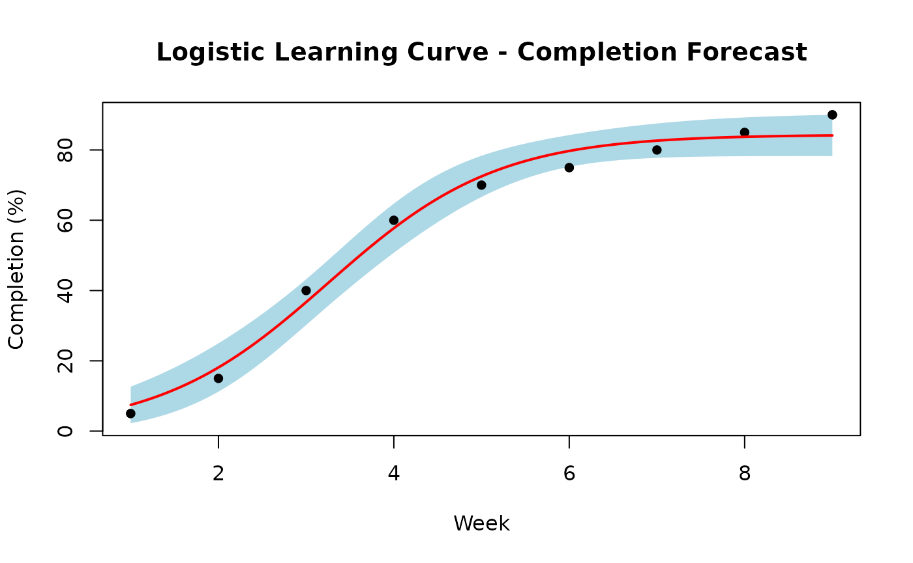
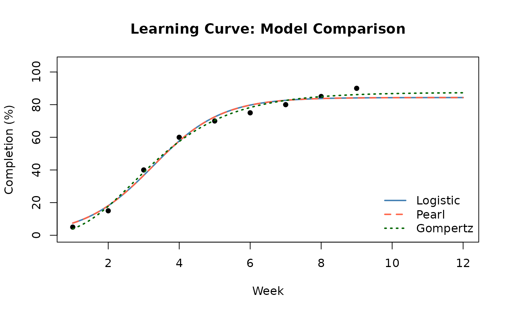

Learning curves model how efficiency or completion rate evolves over time as a team gains experience. In project management they are used to:
- Forecast completion: Predict when a task or deliverable will reach 100% based on past progress.
- Identify acceleration: Detect when a project is in its rapid-improvement phase versus plateauing.
- Set realistic milestones: Calibrate schedule targets against demonstrated learning rates.
Sigmoidal Models
Sigmoidal (S-shaped) functions capture the three phases of learning: slow start, rapid improvement, and plateau. The PRA package provides three model types:
| Model | Formula | Parameters |
|---|---|---|
| Logistic | K / (1 + exp(−r(t − t₀))) | K = ceiling; r = growth rate; t₀ = inflection time |
| Pearl | K / (1 + exp(−r(t − t₀))) | Same as logistic (identical functional form) |
| Gompertz | A · exp(−b · exp(−c · t)) | A = ceiling; c = growth rate; b = initial suppression |
Parameter interpretation (Logistic / Pearl): - K — the maximum achievable value (e.g., 100% completion) - r — how fast the S-curve rises; larger r = steeper transition - t₀ — the time at which the outcome is at its midpoint (inflection point)
Example: Fitting a Logistic Model
We have weekly completion percentage data for a construction deliverable over 9 weeks.
data <- data.frame(
time = 1:9,
completion = c(5, 15, 40, 60, 70, 75, 80, 85, 90)
)Fit the Model
fit <- fit_sigmoidal(data, "time", "completion", "logistic")Assess Fit Quality
Use summary() to examine the fitted coefficients, their
standard errors, and the residual standard error — a measure of how
closely the model matches the observed data.
summary(fit)
#>
#> Formula: y ~ logistic(x, K, r, t0)
#>
#> Parameters:
#> Estimate Std. Error t value Pr(>|t|)
#> K 84.3515 2.5142 33.550 4.67e-08 ***
#> r 1.0356 0.1380 7.505 0.000289 ***
#> t0 3.2520 0.1459 22.284 5.34e-07 ***
#> ---
#> Signif. codes: 0 '***' 0.001 '**' 0.01 '*' 0.05 '.' 0.1 ' ' 1
#>
#> Residual standard error: 4.148 on 6 degrees of freedom
#>
#> Number of iterations to convergence: 10
#> Achieved convergence tolerance: 1.49e-08A small residual standard error (relative to the response scale)
indicates a good fit. Coefficient t values with |t| > 2
are statistically meaningful.
Plot with Confidence Bands
plot_sigmoidal() plots the data, fitted curve, and
optional confidence bounds in a single call.
plot_sigmoidal(
fit, data, "time", "completion", "logistic",
conf_level = 0.95,
main = "Logistic Learning Curve - Completion Forecast",
xlab = "Week",
ylab = "Completion (%)"
)
The shaded region is the 95% confidence band — the range within which the true fitted curve is likely to lie. Wider bands at the tails reflect greater uncertainty in extrapolated predictions.
Predict Future Completion
Use predict_sigmoidal() to generate numeric forecasts,
including confidence bounds for specific future time points.
future_times <- seq(1, 12, length.out = 100)
predictions <- predict_sigmoidal(fit, future_times, "logistic", conf_level = 0.95)
knitr::kable(
tail(round(predictions, 1), 5),
caption = "Predicted completion (final 5 points)",
row.names = FALSE
)| x | pred | lwr | upr |
|---|---|---|---|
| 11.6 | 84.3 | 78.2 | 90.5 |
| 11.7 | 84.3 | 78.2 | 90.5 |
| 11.8 | 84.3 | 78.2 | 90.5 |
| 11.9 | 84.3 | 78.2 | 90.5 |
| 12.0 | 84.3 | 78.2 | 90.5 |
Comparing All Three Model Types
Different model types can produce different forecasts, especially in the tails. It is good practice to fit multiple models and compare their goodness-of-fit.
fit_logistic <- fit_sigmoidal(data, "time", "completion", "logistic")
fit_pearl <- fit_sigmoidal(data, "time", "completion", "pearl")
fit_gompertz <- fit_sigmoidal(data, "time", "completion", "gompertz")
# Residual standard errors for comparison
rse <- function(fit) summary(fit)$sigma
comparison <- data.frame(
Model = c("Logistic", "Pearl", "Gompertz"),
Residual_StdError = round(c(rse(fit_logistic), rse(fit_pearl), rse(fit_gompertz)), 3)
)
knitr::kable(comparison, caption = "Model Fit Comparison (lower RSE = better fit)")| Model | Residual_StdError |
|---|---|
| Logistic | 4.148 |
| Pearl | 4.148 |
| Gompertz | 2.887 |
Now plot all three fits side by side:
x_seq <- seq(1, 12, length.out = 200)
pred_log <- predict_sigmoidal(fit_logistic, x_seq, "logistic")
pred_prl <- predict_sigmoidal(fit_pearl, x_seq, "pearl")
pred_gom <- predict_sigmoidal(fit_gompertz, x_seq, "gompertz")
# Base plot with observed data
plot(data$time, data$completion,
pch = 16, xlim = c(1, 12), ylim = c(0, 105),
main = "Learning Curve: Model Comparison",
xlab = "Week", ylab = "Completion (%)"
)
lines(pred_log$x, pred_log$pred, col = "steelblue", lwd = 2)
lines(pred_prl$x, pred_prl$pred, col = "tomato", lwd = 2, lty = 2)
lines(pred_gom$x, pred_gom$pred, col = "darkgreen", lwd = 2, lty = 3)
legend("bottomright",
legend = c("Logistic", "Pearl", "Gompertz"),
col = c("steelblue", "tomato", "darkgreen"),
lty = c(1, 2, 3), lwd = 2, bty = "n"
)
Note: Logistic and Pearl share the same functional form and will produce identical fits on the same data. Gompertz has a different shape, its inflection point occurs earlier and the curve is asymmetric, making it better suited for processes that accelerate quickly early on.
Summary
The sigmoidal workflow in PRA:
-
fit_sigmoidal()— fit a model to observed time-completion data -
summary(fit)— inspect coefficient estimates and goodness-of-fit -
predict_sigmoidal()— generate numeric forecasts with optional confidence bounds -
plot_sigmoidal()— visualize the fit and confidence band
Choose the model type based on the shape of your data and theoretical expectations about the learning process.